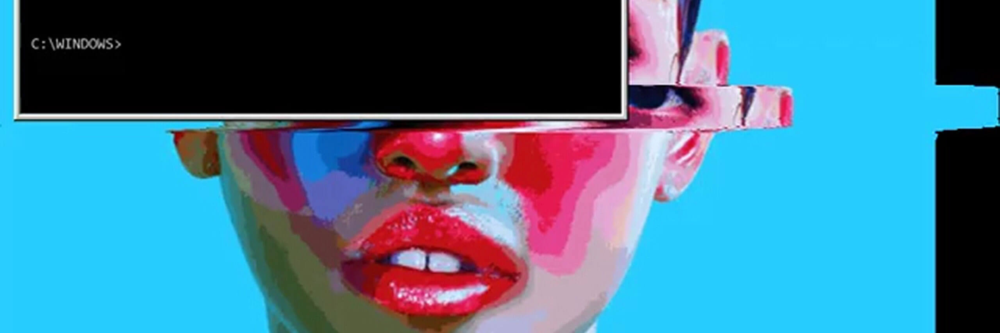

School of Creative Technologies: Basic Information
Address: Campus Box 5750
Phone: (309) 438-2875
Director: Colby Jennings
Degrees Offered: B.A., B.S.
Major in Creative Technologies
The interdisciplinary Creative Technologies major emphasizes design and practice in the integration of digital technologies and the fine arts. In addition to foundational study across the fine arts, the major provides training and experiences across a range of creative/technical fields including video, sound, electronic music, music production, gaming, motion graphics, interactivity, AR/VR, UI/UX, mobile, web, and computer programming concepts.